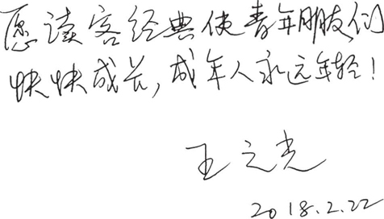
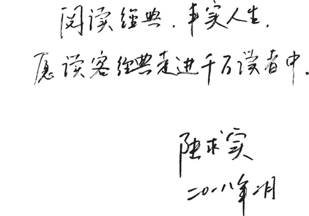

王之光
浙江大学教师，长期从事文学和文化翻译教学与实践，已经出版的有《发条橙》《索多玛的120天》《小妇人》《圣经故事》《法国电影》等，还有汉译英作品如《台湾简史》《中美关系史》等。

陆求实
中国翻译协会专家会员、上海翻译家协会理事，致力于日本文学译介多年，译有夏目漱石、谷崎润一郎、吉川英治、渡边淳一、村上春树、岛田雅彦等人作品，曾获“上海翻译新人奖”“上海优秀中青年文艺家”“上海文艺家荣誉奖”， 2011年荣获日本“野间文艺翻译奖”。